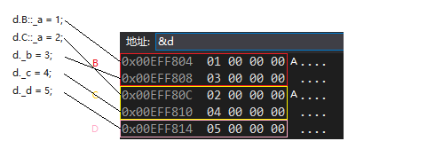

继承机制是代码复用重要的手段，允许在保持原有类特性的基础上进行扩展，产生子类
继承方式
public继承：继承父类中的public和protected成员，访问限定符不变
private继承：继承父类中的public和protected成员，访问限定符变为private
protected继承：继承父类中的public和protected成员，访问限定符变为protected
基类的private成员，也被继承在派生类中，但不可访问
class默认继承方式是private，struct默认继承方式是public
基类和派生类对象赋值转换
- 子类对象/地址可以直接赋值给父类的对象/引用/指针，会进行切片操作
- 父对象不能赋值给子类对象，但父类指针可以通过强制类型转换赋值给子类指针，但是可能出现越界
继承中的作用域
1 | class Person { |
派生类的默认成员函数
构造函数：
子类构造函数先自动调用父类构造函数初始化父类部分的成员
如果父类没有默认构造函数，则必须在子类构造函数的初始化列表阶段显示调用
拷贝构造函数：
默认拷贝构造会自动调用父类的拷贝构造
显式定义子类的拷贝构造，编译器默认调用的父类构造函数
显式调用父类拷贝构造，会进行切片操作
operator=：
默认生成的赋值运算符会自动调用父类的赋值运算符
显式定义子类的赋值运算符， 编译器不会自动调用父类的赋值运算符
析构函数：
父类与子类析构构成同名隐藏：编译器底层修改的析构函数的名字，为了支持多态
子类析构函数会在被调用完成后自动调用父类的析构函数清理基类成员。保证子类对象先清理子类成员再清理父类成员的顺序
父类析构在任何情况下编译器都会自动调用，不需要显式调用
C++11 final
1 | // 实现一个不可继承的类 |
继承与友元、静态
友元关系不能继承，子类友元不能访问子类私有和保护成员
父类定义static静态成员，则整个继承体系里面只有一个这样的成员
虚拟继承
菱形继承有数据冗余和二义性的问题，所以虚拟继承可以解决数据冗余和二义性
1 | class A { |
虚拟继承：
1 | class A { |
普通菱形继承模型

虚拟菱形继承模型

继承与组合
- 继承是一种is-a的关系。每个子类对象都是一个父类对象。
- 组合是一种has-a的关系。假设B组合了A，每个B对象中都有一个A对象。
继承生成子类的复用被称为白箱复用：在继承方式中，父类的内部细节对子类可见 ，一定程度破坏了父类封装，基类的改变，对子类影响大。子类和父类依赖关系强，耦合度高
对象组合是另一种复用选择，要求被组合的对象具有良好定义的接口。被称为黑箱复用：对象的内部细节不可见。组合类之间没有很强的依赖关系，耦合度低。
优先使用对象组合，而不是类继承。